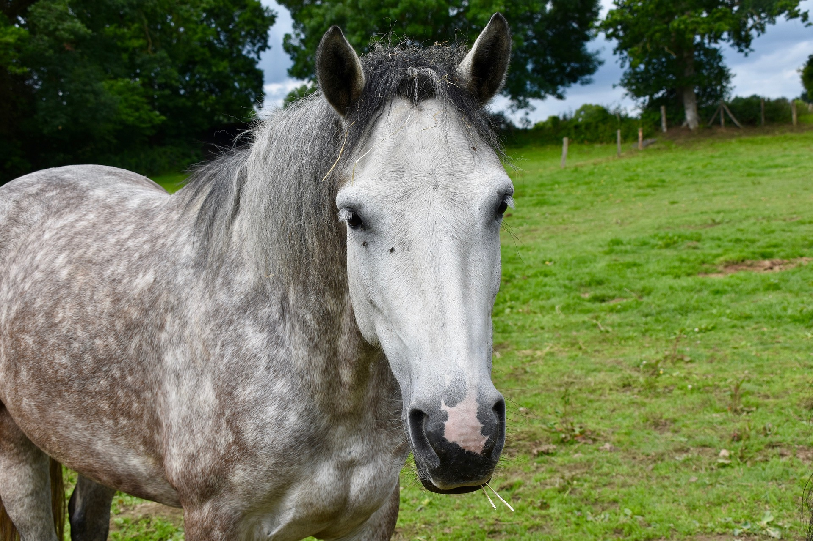
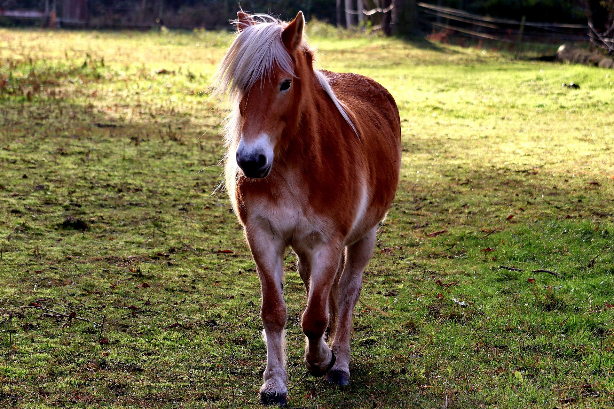
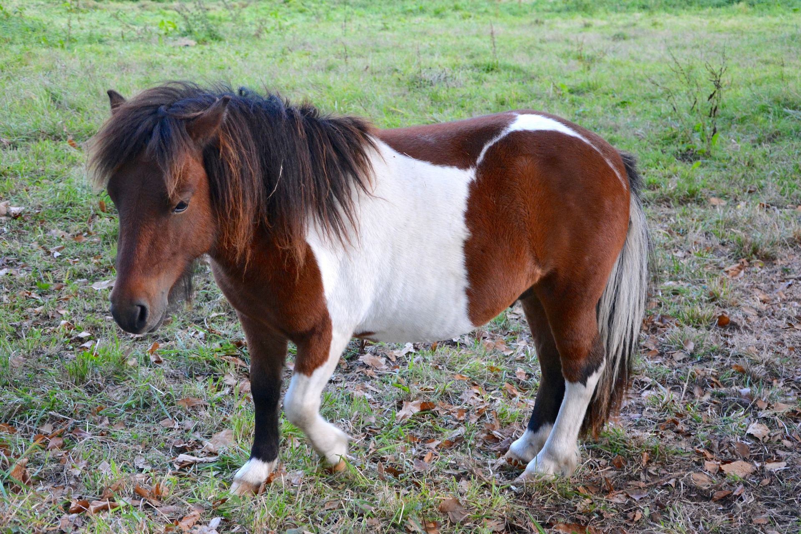
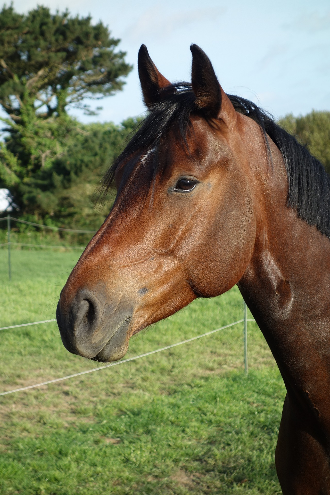

Egenskaper: Pricken kan uppfattas som en liten gringubbe men är egentligen genomsnäll. Han älskar att hoppa, har tävlat hoppning lätt C. Pricken har lite dåligt morgonhumör men ger man honom sitt favoritgodis (morötter) så blir han snabbt på glatt humör.
Namn: Munsboro "Aladdin"
Född: 2016
Ras: Arabiskt fullblod
Kön: Hingst
Egenskaper: Aladdin är en känslig kille med hjärtat på rätt ställe. Har tävlat hoppning lätt C och dressyr lätt A. Går helst med sin bästis "Pelle".

Namn: Madonna "Donna"
Född: 2010
Ras: Connemara
Kön: Sto
Egenskaper: Donna är stallets äldsta häst. Hon är gammal och vis men trots sin ålder är hon fortfarande väldigt pigg och älskar att få komma ut på mysiga skogsturer. Hon har tidigare tävlat i både hoppning och dressyr men har nu lagt hästskorna på hyllan. Hon älskar att stå i timmar och bli kliad under manen.

Namn: Stardust "Dustie"
Född: 2014
Ras: Haflinger
Kön: Sto
Egenskaper: Stallets största skogsmulle. Älskar långa uteritter men gör sig väl allround inne på ridbanan också. I hagen hänger hon helst med sin trygga kompis "Donna".

Namn: Pearljam "Pelle"
Född: 2011
Ras: Shetlandsponny
Kön: Valack
Egenskaper: Pelle är stallets lilla pajas. Han är ofta busig men gör aldrig något dumt. Helst busar han med sin bästis "Aladdin". Favoritgodis är sockerbitar.

Namn: Nightwalker "Nightan"
Född: 2016
Ras: Svensk varmblodstravare
Kön: Sto
Egenskaper: Nightan började sitt liv som travhäst men insåg snabbt att ridsport mer är hennes grej. Hon har tävlat i hoppning lätt B och även dressyr Lätt C. Nightan är väldigt pigg och lyhörd utan att bli för het.